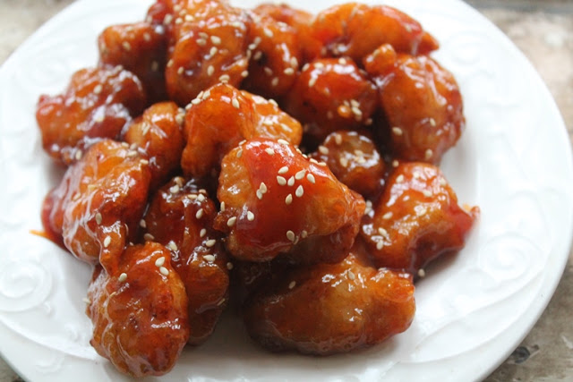

Honey garlic chicken

Description
I have made this recipe once for myself and my love, and i have never stopped thinking about it since. Sweet, savory and addictive.
Although this recipe does take a fair amount of time and effort to make, it is worth every second of the process. I guarantee you won't regret it :3
Ingredients
Brine
- 2 cups of water
- 1 tablespoon of salt
- 1 tablespoon of sugar
- 1 tablespoon of black pepper*
- 1 tablespoon of smoked paprika
- 1 tablespoon of onion powder
- 2 bay leaves
- 1/2 teaspoon of mustard
- 1kg of chicken
Wet batter
- 1/3 cup of flour
- 120ml of water
- 1 egg
Seasoned flour
- 2 cups of flour
- 2 tablespoons of chicken seasoning
- 2 teaspoons of smoked paprika
- 1 teaspoon of black pepper*
- 2 teaspoons of onion powder
Honey garlic sauce
- 100g of unsalted butter
- 4 cloves of garlic, minced
- 1/3 cup of honey
- 1 teaspoon of chili flakes*
- 1 tablespoon of soy sauce
- 1 teaspoon of smoked paprika
- 1/2 teaspoon of salt
*I omit the pepper and chili flakes because i cannot eat it. Add as much as you like.
Steps
Brine
- Mix all the brine ingredients in a bowl.
- Refrigerate for an hour.
Wet batter
- Add all wet batter ingredients to a bowl and mix.
- Do this 1 hour in advance as well.
Seasoned flour
- Add all seasoned flour ingredients to a bowl and mix.
Honey garlic sauce
- Melt the butter in a sauce pan.
- Add the garlic and cook it for 3 to 4 minutes.
- Add the paprika.
- Add the honey and soy sauce.
- Add the chili flakes and salt.
Assembling
- Drain the brine from the chicken.
- Coat the chicken in the seasoned flour.
- Coat the chicken in the wet batter.
- Coat the chicken in seasoned flour again.
- Deep fry the chicken until golden brown.
- Coat the fried chicken with the honey garlic sauce.
And it's done! I hope you like this chicken recipe as much as I do!